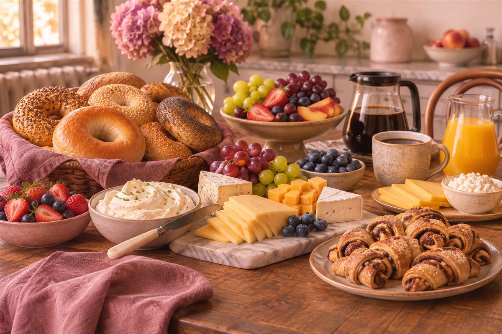

קבוצת נשים
- תאריכים: 7.12–13.12.2026. טיסה קבוצתית באל על ביום ראשון 6.12 בלילה, וחזרה ביום ראשון 13.12.
- מחיר: תוכנית ₪2,100, ארוחות ₪1,640. לינה במלון אש"ל מול 770 בתוספת. הלינה אזלה
- אפשר להצטרף לתוכנית בלבד או לתוכנית עם ארוחות, בלי לינה.
המדריך המלא לנסיעה לרבי בחנוכה: מהאריזה, דרך הנחיתה ועד ההדלקה ב-770.
לא נמצא נושא מתאים. נסו מילה אחרת.
שיחות ומאמרים של הרבי לחנוכה, וחומר על הנסיעה לרבי. כל הקישורים לאתרי חב"ד.
"אפילו מהקירות של 770 אפשר לקבל"מתוך דברי הרבי, כפי שמובא בחב"דפדיה
כל השיחות והמאמרים נמצאים באתרים המקוריים. כאן מופיעים רק קישורים.
מה אפשר לראות, כמה זה עולה, מתי פתוח ואיך מגיעים מ-770.
אין מקום שמתאים לכל הסינונים. אפשר להוריד סינון.
איפה קונים אוכל לשבת, מתי מדליקים, ומה כדאי לסדר מראש.
| שבת | הדלקת נרות (שישי) | צאת השבת |
|---|---|---|
| השבת שלפני חנוכה27–28.11.2026 | 16:12 | 17:15 |
| שבת חנוכה · נר ראשון4–5.12.2026 · במוצאי שבת: נר שני | 16:10 | 17:13 |
| שבת חנוכה · נר שמיני11–12.12.2026 · שבת זאת חנוכה | 16:10 | 17:14 |
| השבת שאחרי חנוכה18–19.12.2026 | 16:12 | 17:16 |
הזמנים לברוקלין (הדלקה 18 דקות לפני השקיעה), לפי Hebcal. אפשר לבדוק גם ב-Chabad.org.
באפליקציות הכלליות (Uber Eats, DoorDash, שאליה עברה גם Wolt בארה"ב) רוב החנויות אינן בכשרות שאנחנו מקפידים עליה. בשכונה יש סופרמרקטים כשרים עם משלוחים משלהם:
בכל הזמנה בודקים את ההכשר של כל מוצר לפי מדריך הכשרות.
לאן פונים, מה עושים כשצריך מרשם, ואיך מקבלים החזר מהביטוח.
לחברות ביטוח הנסיעות יש מוקד 24 שעות בעברית. הן מפנות לרופא או למרפאה בהסדר, ולפעמים משלמות ישירות.
לחום, דלקות, פציעות קלות ומרשמים. נכנסים בלי תור. בלי ביטוח, ביקור עולה בדרך כלל כמה מאות דולרים. איפה יש מרפאה קרובה?
קבלות, סיכום ביקור ומרשמים. בלי מסמכים אין החזר מהביטוח.
חדר מיון 24 שעות: Kings County Hospital, 451 Clarkson Ave, בערך 2 ק"מ מ-770. טלפון: 718-245-3131. במצב מסכן חיים מתקשרים קודם ל-911 או להצלה.
בית מרקחת קרוב: Walgreens, 1040 St Johns Pl, כמה רחובות מ-770. טלפון: 718-953-7150.
השעות משתנות, ובחנוכה ובימי ראשון לפעמים מקצרים. כדאי להתקשר לפני שיוצאים.
| מה מחפשים | איך זה נקרא שם |
|---|---|
| אקמול (פרצטמול) | Tylenol · Acetaminophen |
| נורופן / אדוויל (איבופרופן) | Advil · Motrin · Ibuprofen |
| תרופה לאלרגיה | Claritin · Zyrtec |
בכל שאלה על מינון או שילוב תרופות שואלים את הרוקח.
מה עושים, למי פונים ואיזה מסמכים לשמור.
בארה"ב אין החזר מס לתיירים. מס המכירות נגבה בקופה, ובניו יורק סיטי הוא 8.875%. אין דלפק החזר מס בשדה התעופה.
טיפ שחוסך כסף: בניו יורק סיטי בגדים ונעליים במחיר של פחות מ-$110 לפריט פטורים ממס המכירות.
הקבוצות של נשי ובנות חב"ד צפת לחנוכה תשפ"ז: נשים, סמינר, תיכון ובנות מצווה.
איך מגיעים לאוהל של הרבי בקווינס, מתי יוצאים ומה כדאי להכין.
האוהל נמצא ב-226-20 Francis Lewis Blvd, Cambria Heights, NY, בקווינס. מ-770 זו נסיעה של כ-30–45 דקות, לפי התנועה.
יש שירות אוטובוסים יומי מקראון הייטס לאוהל: bustoohel.com. בחגים ובימים מיוחדים מוסיפים נסיעות. נסיעות פרטיות יוצאות גם מ-770 כל בוקר.
יציאה מ-The Draidel, ללא הרשמה מראש. ביום שישי אין נסיעה של 19:00. במוצאי שבת: יציאה 19:00, חזרה 20:45. ייתכנו שינויים בלוח של השנה.
מלבד האוטובוס, יוצאות נסיעות פרטיות מ-770 כל בוקר. הזמנים נקבעים ב-770, ושואלים עליהם במקום. אפשר גם להזמין אובר, או להזמין הסעה פרטית:
המספרים נאספו מאתרי חב"ד (groupstoohel.com, אתר האוהל ואתרי השכונה). מחירים לא מפורסמים: שואלים בטלפון לפני ההזמנה, ומזמינים מראש, במיוחד בחנוכה. מידע כללי במרכז האוהל: 718-723-4545.
כל מה שצריך לסדר בבית, כדי לנחות רגועה.
אפשר להוסיף ולהוריד פריטים. הרשימה והסימונים נשמרים רק בטלפון או במחשב הזה.
מגיעים לשדה לפחות 3 שעות לפני טיסה לארה״ב. ברכבת ובאוטובוסים אין נסיעות בשבת, אז בטיסה של מוצאי שבת מתכננים מראש.
תחנת הרכבת "נמל תעופה בן גוריון" צמודה לטרמינל 3. יש רכבות ישירות מהקו של תל אביב וירושלים (מתחנת יצחק נבון), ומקווים נוספים בהחלפה. בגלל עבודות יש לפעמים שינויים בקווים, אז בודקים לפני כל נסיעה.
מקורות: פואנטה – קו 485 · ynet · Moovit. הפרטים משתנים, בודקים מול המפעיל לפני הנסיעה.
בעלי דרכון ישראלי צריכים ESTA מאושר לפני הטיסה. מגישים רק באתר הרשמי של ממשלת ארה"ב. אתרים אחרים נראים דומים וגובים עמלה גבוהה. כדאי להגיש לפחות 72 שעות לפני הטיסה, ועדיף כמה שבועות לפני.
מ-3 בנובמבר 2026 ועד 18 בדצמבר 2026 (אם לא יוארך), כל נוסעת בטיסה בינלאומית לארה"ב חייבת למלא הצהרה של ה-CDC בשם Passenger Disclosure and Attestation.
מקורות: Forbes · Yahoo Travel. את הפרטים המעודכנים כדאי לבדוק מול חברת התעופה לפני הטיסה.
טיפול רפואי בארה"ב יקר מאוד. עושים ביטוח נסיעות לכל ימי השהייה, כולל כיסוי למזוודות ולביטול טיסה.
הדרך הכי נוחה היא eSIM: קונים באפליקציה עוד בבית, ומפעילים כשנוחתים. בודקים קודם שהטלפון תומך ב-eSIM. אפשרות אחרת: חבילת חו"ל של החברה הישראלית, או סים מקומי בשכונה.
מזמינים מראש הסעה משדה התעופה לשכונה, במיוחד בנחיתה בלילה או עם הרבה מזוודות.
שאלות ותשובות לפני הנסיעה ובזמן הטיסה.
נאמר: "קנה מיד עמיתך", ודרשו חכמים: "באת לקנות, קנה מישראל חברך". לכן, כמו בכל עסקה, גם בבחירת נהג או חברת נסיעות יש להעדיף דווקא יהודים, כל עוד המחיר, השירות וטיב הנסיעה שווים.
כשהמחיר אצל הגוי זול יותר (ואין בכוונתו לרושש את היהודי), דנו הפוסקים עד כמה צריך לשלם כדי להעדיף יהודי. יש שכתבו עד הפסד של "שתות", כ-16.5% מהמחיר שמציע הגוי, ויש שכתבו עד חומש. ביותר מכך רשאי לנסוע עם הגוי.
בגמרא נאמר ש"כל היוצא לדרך צריך להתפלל תפילת הדרך", כבקשת רחמים לעבור את הדרך וסכנותיה בשלום. הדרך המחייבת היא לפחות "פרסה", כ-4 ק"מ, או דרך מסוכנת קצרה מזה. אפשר לברך אחרי שיוצאים כ-36 מטרים מחוץ לעירוב של העיר.
הרוגוצ'ובר הוכיח מהגמרא בחולין שאין דרכו של אדם בשמיים, ופסק שאין לומר תפילת הדרך בטיסה. למעשה, כיוון שהטיסה היא "כמקום סכנה", נוהגים לאומרה, ורצוי לעשות זאת בדרך לשדה התעופה או כשהמטוס עדיין על הקרקע.
נסיעה בתחבורה ציבורית שמופעלת מיד בצאת השבת מעודדת במידה מסוימת חילול שבת. לכן לכתחילה אין לנסוע בנסיעה הראשונה שההכנות אליה היו בשבת, אלא להמתין זמן מה, כך שאפשר יהיה לעשות את ההכנות אחרי צאת השבת. הרבי הורה שלא לטוס בטיסות שיוצאות מיד בצאת שבת.
לגבי נסיעה עם נהג יהודי במוצאי שבת, גם אם לא הבדיל, נטו הפוסקים להקל מכמה טעמים.
ברכת המפיל נתקנה על שנת הקבע של הלילה. מי שהולך לנוח מעט בשנת ארעי ומתכנן לישון את שנתו הקבועה בהמשך הלילה, אינו מברך המפיל לפני השנה הראשונה.
בנסיעה ארוכה בשעות הלילה: אם משערים שהשינה תהיה רצופה לפחות חצי שעה, מברכים המפיל בשם ומלכות. אם מסופקים, מברכים בלי שם ומלכות, ואת שאר קריאת שמע אפשר לומר בשלמותה.
דווקא בנטילה שאחרי שנת לילה יש להיזהר שלא ללכת ארבע אמות. לכן מי שישנה במטוס את שנת הלילה, תדאג לכתחילה ליטול ידיים לפחות פעם אחת ליד מקום השינה. אם אי אפשר, תלך פחות פחות מארבע אמות עד הברז הקרוב.
ברכות השחר נאמרות פעם אחת ביום, אחרי שנת הלילה. מי שמתעוררת משנת הלילה אחרי חצות, מברכת ברכות התורה לפני הלימוד. מי שהייתה ערה כל הלילה ללא הפסקה, מברכת רק כשיאיר היום.
לפי המקום שהמטוס נמצא מעליו באותו רגע. לכן בדרך מארה"ב לארץ ישראל הלילה או היום מסתיימים מהר מאוד, והזמן בין הנץ החמה לסוף זמן קריאת שמע קצר בהרבה משלוש שעות.
מתוך חוברת "תוכניה" של ארגון נשי ובנות חב"ד צפת, חנוכה פ"ז.

לכל המדריךאחד מעשרת המבצעים של הרבי הוא מבצע כשרות. המידע הוגה על ידי מומחים בכשרות מאנ"ש בשכונה ורבנים העוסקים בתחום.
גופי הכשרות בארץ הקודש: רבים מההכשרים בארה"ב אינם מגיעים לרמה של ההכשרים בארץ, ובראשם העדה החרדית והרב לנדא. לכן ראוי ככל האפשר להשתמש במוצרים מארץ ישראל בכשרות מהודרת מוכרת.
חלק מגופי הכשרות בחו"ל (גם המהודרים) סומכים על גופי הכשרות בארץ בלי בדיקה עצמית. לכן במוצרים רבים שמיוצרים בארץ אי אפשר לסמוך על הכשר מחו"ל, אלא רק כשמופיע עליהם הכשר מהודר מהארץ.
מוצרים ספציפיים: יש מוצרים בלי אחד ההכשרים שברשימה שאפשר לסמוך עליהם, כי ידוע שהמשגיח שלהם מהימן. בכל מוצר כזה מבררים לגופו אצל רבנים ומומחים.
מיץ טבעי: כל מיץ טעון הכשר מהודר, גם כשכתוב "100% טבעי" או "100% פרי", כי באותו פס ייצור עשויים להיות מוצרים לא כשרים.
למוצרי פרווה וחלבי
שימו לב: יש מוצרים עם חותמת בצורת משולש או כוכב סביב האות K שאינם כלולים ברשימה.
Sprite, Ginger: בהשגחת OU, מיוצר בארה"ב בלבד.
בלי טעמים אינו צריך הכשר. עם טעמים: OU. בטעם שמכיל ענבים צריך הכשר מהודר.
תה טבעי בלי טעמים אינו צריך הכשר. תה בטעמים: רק מיוצר בחו"ל, בהשגחת OU.
יין (Yain), כתר (Keser) ופארבריינגען בהשגחת בד"ץ קראון הייטס CHK. קדם (Kedem) בהשגחת הרב גרינוולד מצעהלים.
רבני חב"ד פסקו שההכשר והחברות הבאים עומדים תחת חרם שלא בוטל עד היום (בעקבות מאורעות נגד רבותינו נשיאינו וחסידי חב"ד בשנות הלמ"ד–מ"ם, שעליהם מחה הרבי ברבים):
האיסור אינו בתוקף אם מופיע על המוצר הכשר מהודר נוסף.
ועד הכשרות שע"י בד"ץ קרית יואל אינו כלול בחרם, אך לדעת כמה רבנים ומשפיעים אין להנות גם ממנו מאותם טעמים, למרות היותו מהודר. כל אחד יעשה כפי עצת משפיע.
מי הברז בניו יורק מוחזקים כנגועים בשרצים, ולכן יש להיזהר (לפחות מספק) שלא לשתות מברז שאינו מסונן כראוי. כדאי להיזהר גם בשטיפת הפה ובהדחת פירות וירקות. בשטיפת כלים אין חשש אחרי ייבוש הכלי.
אפשר לראות אם הברז מסונן לפי מסנן ("פילטער") שמחובר לצנרת מתחת לכיור. מי שמתקינה מסנן בעצמה: גודל החורים לא יעלה על 50 מיקרון.
בניו יורק ירקות עלים בחזקת נגועים, וצריך לשטוף ולבדוק כל עלה בנפרד מול האור. כיוון שיש ירקות ששטיפה לא מועילה להם ויש חרקים שלא רואים, נכון להדר ולקנות ירקות קצוצים וארוזים אחרי שטיפה ובדיקה, בהכשר מהודר. יש כאלה בחנויות בשכונה.
מתארחים רק אצל משפחות שאפשר לסמוך בבירור על הקפדתן בכשרות מהודרת, בדיוק כמו בבית שלנו.
האוכל בחדר האוכל של אש"ל הכנסת אורחים מבושל על ידי תמימים ואברכים יראי שמיים מאנ"ש, במטבח שעומד באישור בד"ץ קראון הייטס. בבניין המלון של אש"ל מותקן מסנן כללי לכל הברזים.
רמת הכשרות אינה זהה בכל המסעדות בשכונה, ויש מהודרות יותר מאחרות. כדאי לברר אצל רבנים ומומחים.
בשכונה, גם ב-770, אפשר למצוא אוכל מבושל שהוכן לאורחים או שנשאר משמחות. גם הוא צריך חותמת כשרות מוכרת ומהודרת. אחרת ייתכנו בעיות של בשר שנתעלם מן העין ושחיטת ליובאוויטש, חוסר השגחה, בישול נכרי, בדיקת חרקים ומוצרי בסיס לא מהודרים.
madrichkashrut@gmail.comשליחת מיילמתוך "מדריך כשרות בסיסי לאורחי המלך", שהוגה על ידי מומחים בכשרות מאנ"ש בשכונה.
כרטיס לסובווי, אובר, ואיך מגיעים להדלקה במנהטן, לטיימס סקוור, למייסיז, לאטלנטיק ולפריימרק.
Grand Army Plaza, בפינת 5th Ave ו-59th St, מול מלון פלאזה. חנות Apple Fifth Avenue (קוביית הזכוכית) נמצאת ממש מולה.
כ-45 דקות. אפשרות נוספת: קו 3 עד Times Sq, ומשם קו N/R/W עד 5 Av/59 St.
זמני ההדלקה בשנים קודמות: ראשון–חמישי בערך 17:30, שישי בערך 15:45, מוצאי שבת בערך 20:30. שנים קודמות
כ-40 דקות.
מייסיז (Macy's) ברחוב 34, בין השדרה השביעית לברודוויי. חנות הדגל של פריימרק (Primark) נמצאת גם היא בהראלד סקוור.
כ-35 דקות.
קניון ליד תחנת אטלנטיק, עם רשתות כמו Target. הכי קרוב ל-770.
כ-15 דקות.
בדאונטאון ברוקלין, ברחוב Fulton. יש גם סניף בקניון Kings Plaza.
כ-20 דקות.
רחוב הקניות הוא השדרה ה-13, מרחוב 39 עד רחוב 55, בערך קילומטר וחצי של חנויות. יש בגדים צנועים לנשים ולילדים, יודאיקה וספרי קודש, פאות, מאפיות ומעדניות.
כ-45 דקות בסובווי, או כ-20 דקות באובר.
רחובות הקניות הם שדרה J, קינגס הייוויי, שדרה M ושדרת קוני איילנד. יש מאפיות, מעדניות, פיצריות, מסעדות, סופרמרקטים כשרים גדולים כמו Pomegranate בשדרת קוני איילנד, וחנויות בגדים.
כ-40 דקות בסובווי, או כ-15 דקות באובר.
מקורות: Wikipedia · Brooklyn Eagle · Avenue J · GoKosher
זמני הנסיעה משוערים. מקורות: FOX 5 NY · Secret NYC
עם מזוודות, הדרך הנוחה היא הסעה מוזמנת מראש או אובר. ממליצים על נהגים וחברות הסעה מהשכונה.
בוחרים מאיפה ולאן, או לוחצים על המפה, ורואים כמה זמן ההליכה והנסיעה. משם פותחים את המסלול המדויק בגוגל מפות או מזמינים אובר.
נתוני המפה © תורמי OpenStreetMap. הזמנים הם הערכה לפי מרחק. את הזמן המדויק, כולל עומסים וקווים, רואים בגוגל מפות.
הדלקות ותפילות ב-770, לילה אחר לילה.
| ערב | נר | ב-770 | בבית |
|---|---|---|---|
| שישי 4.12כ"ד כסלו · ערב שבת | 1 | לפני שבת | לפני 16:10 |
| מוצ"ש 5.12כ"ה כסלו | 2 | אחרי ערבית | אחרי 17:13 |
| ראשון 6.12כ"ו כסלו | 3 | עם מנחה | בערך 16:28 |
| שני 7.12כ"ז כסלו | 4 | 15:15 | בערך 16:28 |
| שלישי 8.12כ"ח כסלו | 5 | 15:15 | בערך 16:28 |
| רביעי 9.12כ"ט כסלו | 6 | 15:15 | בערך 16:28 |
| חמישי 10.12ל' כסלו · ראש חודש | 7 | 15:15 | בערך 16:28 |
| שישי 11.12א' טבת · ערב שבת | 8 | לפני שבת | לפני 16:10 |
ההדלקות ב-770 משודרות בשידור חי ב-770live.com. זמני השקיעה וצאת השבת לפי Hebcal.
לפי החוברת "תוכניה" של נשי ובנות חב"ד צפת, חנוכה תשפ"ז. ייתכנו שינויים, כדאי לבדוק בלוח המודעות ב-770.
הכינוס, ההדלקה המרכזית, שיירת האור ועוד. לוחצים על אירוע לכל הפרטים.
כינוס "לכל אורחות המלך": הכינוס המרכזי של הנשים והבנות שבאו לרבי, בזאת חנוכה. כדאי להגיע מוקדם כדי למצוא מקום.
החנוכייה הגדולה בעולם, ב-Grand Army Plaza, בפינת 5th Ave ו-59th St במנהטן, מול מלון פלאזה.
זמני ההדלקה בשנה שעברה: ראשון–חמישי ב-17:30, שישי ב-15:45 (לפני שבת), מוצאי שבת ב-20:30. השנה הנר הראשון ביום שישי 4.12, ולכן ההדלקה הראשונה צפויה בסביבות 15:45.
איך מגיעים: קו 3 עד Times Sq–42 St, ומשם N, R או W עד 5 Av/59 St. כ-50 דקות.
מקור: SecretNYC, לוח 2025
ב-Grand Army Plaza, בכניסה לפרוספקט פארק, קרוב מאוד ל-770. בשנה שעברה היו בכל ערב לביבות ומתנות לילדים.
איך מגיעים: קו 3 ישירות לתחנת Grand Army Plaza, שלוש תחנות מ-Kingston Av.
מקורות: COLlive · Mommy Poppins
טנקי המבצעים ומאות מכוניות עם חנוכיות יוצאים מ-770 ונוסעים דרך גשר מנהטן אל מנהטן. אפשר לצפות ביציאה מול 770.
בשנה שעברה השיירה יצאה בערב השלישי של חנוכה, עם 35 טנקים ויותר מ-300 מכוניות. התמימים ב-770 כבר נערכים לשיירה של השנה, והמועד הסופי יפורסם בקרוב.
מקורות: חב״ד אינפו · COLlive · MenorahParadesNYC
ראלי לילדים ב-770 עם הדלקה, בשידור חי לילדים בכל העולם. היום החמישי של חנוכה, ובערב מדליקים נר שישי.
מקור: הראלי של השנה שעברה
במשטח LeFrak Center שבפרוספקט פארק, מטעם The Space CH. בשנה שעברה השתתפו כ-350 נשים ובנות, גם מישראל.
מקור: COLlive
Binyan Sheleg, 333 Albany Ave, בקראון הייטס. לילדים בגילאי 3–9 עם מבוגר. בשנה שעברה המסיבה הייתה בערב החמישי, עם הופעה וסדנאות: קישוט סופגניות, סביבונים וחנוכייה אכילה.
מקור: COLlive
שתי דקות הליכה מ-770. בשנה שעברה היו שם פעילויות חנוכה כל ימי החג: קישוט סופגניות, סדנת שמן זית ומעבדה. בשישי ובשבת המוזיאון סגור.
מקור: Anash
עסקים מהשכונה שמצטרפים לעזור לאורחות של הרבי. חלקם עם הטבה מיוחדת לטסות המדריך
מציגים בקופה את הקוד או את המסך של העסק במדריך. כל עסק שותף מצרף קופון לטסות "נוסעים לרבי".
עסקים בקראון הייטס, מתוך רשימות של אתרי השכונה (חב"ד אינפו, CrownHeights.info, COLlive) ובדיקה בגוגל מפות. זה לא פרסום בתשלום. שעות ומחירים משתנים, אז מומלץ להתקשר לפני.
כדאי לשמור את המספרים בטלפון עוד לפני הטיסה.